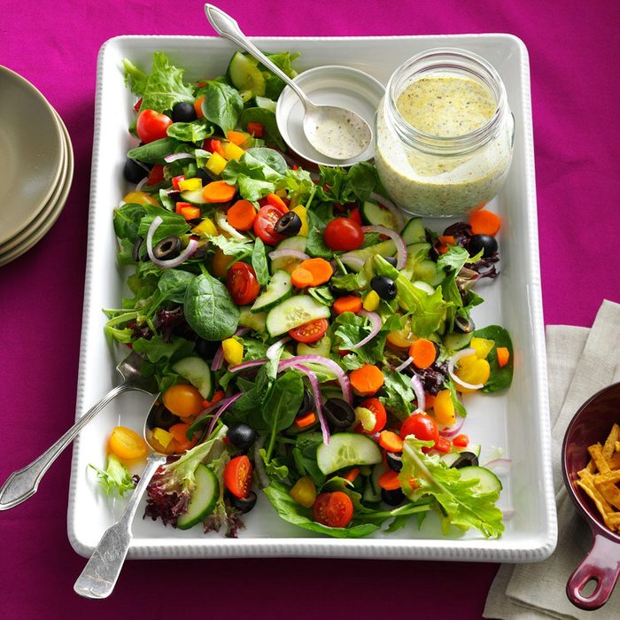

Crunchy delicious rainbow salad you can prepare on your break from your work from home job. Easy to prepare that only takes 25 minutes with 8 servings. The rainbow salad is more focused on the vegetables with different color ingredients that make up a beautiful plate of rainbow colored salad

Ingredients
1/2 English cucumber, cut lengthwise in half and sliced
2 medium carrots, thinly sliced
1 cup each red and yellow cherry tomatoes, halved
3/4 cup pitted ripe olives, halved
1 celery rib, thinly sliced
1/4 cup each chopped sweet yellow, orange and red pepper
1/4 cup thinly sliced red onion
1/8 teaspoon garlic salt
Dash coarsely ground pepper
1 package (5 ounces) spring mix salad greens
2/3 cup Pesto Buttermilk Dressing or reduced-fat buttermilk ranch salad dressing
Directions
Place cucumber, carrots, tomatoes, olives, celery, sweet peppers, onion, garlic salt and pepper in a large bowl; toss to combine.
Just before serving, add salad greens. Drizzle with dressing and toss gently to combine.